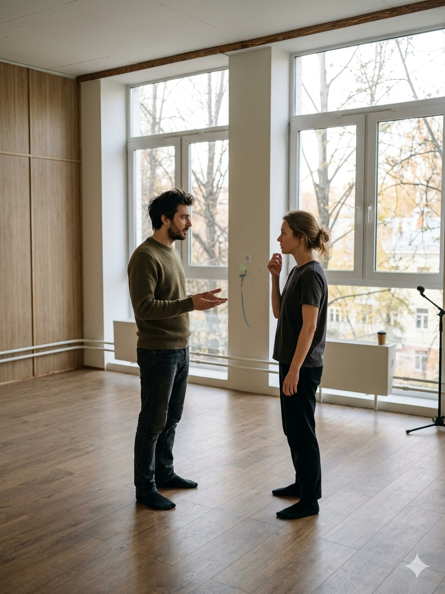

01
Видеть партнёра
Не только слушать слова. Но замечать реакцию, интонацию, изменение состояния и то, что происходит между вами прямо сейчас. Из этого внимания рождается настоящий контакт.
Быть свободнее в контакте с другим — через сцену, импровизацию и внимание друг к другу.
Записаться на курс
Большую часть времени в общении люди сосредоточены не на другом человеке, а на себе. Из-за этого контакт часто становится менее живым. Мы вроде бы разговариваем друг с другом, но по-настоящему не слышим и не замечаем человека рядом.
Особенно это чувствуется в ситуациях, где невозможно заранее всё просчитать:
Вместо живой реакции появляется слишком много контроля.
Сцена — это место, где привычные реакции становятся особенно заметны.
Именно в такие моменты становится видно, как сильно мы пытаемся всё контролировать, как уходим в голову вместо контакта, и как начинаем играть роль вместо живой реакции.
Поэтому сценическое взаимодействие так сильно связано с обычной жизнью. На курсе мы используем сцену как пространство, где можно постепенно стать свободнее в контакте с другим человеком. Не через «правильную игру». А через внимание, взаимодействие, импровизацию и живую реакцию.
В центре курса — партнёрское взаимодействие. Умение не просто говорить рядом с другим человеком, а действительно быть с ним в контакте.
На курсе мы постепенно смещаем внимание с постоянного контроля — на партнёра, момент и сам процесс взаимодействия. В основе курса лежат три вещи:
Не только слушать слова. Но замечать реакцию, интонацию, изменение состояния и то, что происходит между вами прямо сейчас. Из этого внимания рождается настоящий контакт.
Приходится реагировать в моменте, импровизировать, подхватывать партнёра и искать сцену прямо внутри взаимодействия. И постепенно вместо напряжения появляется свобода.
Из импровизации начинают рождаться диалоги и сцены. Появляется ощущение живого взаимодействия, которое невозможно заранее придумать или полностью проконтролировать.
Это не театральная школа и не психологическая терапия. Это пространство, где через сцену постепенно появляется больше живости.
Формат камерный: 6 человек в группе и 3 часа живой практики.
Но главное — это само ощущение процесса.
Момент, когда вместо постоянного контроля появляется больше лёгкости, спонтанности и интереса к другому человеку.
Когда диалог начинает складываться сам. Когда можно смотреть человеку в глаза и не проваливаться в себя.
Когда ты выходишь в сцену без заготовки. Не знаешь заранее, что скажешь через десять секунд. Теряешься. Смеёшься. Импровизируешь.
И в какой-то момент уже сам не замечаешь, как речь начинает литься свободнее. Как между вами появляется что-то живое.
Сцена начинает складываться сама — местами смешно, местами неожиданно, а иногда действительно сильно.
В финале курса группа создаёт короткий фильм.
Мы вместе придумываем идею, собираем сцены, импровизируем, ищем живые взаимодействия между людьми и создаём общее творческое высказывание.
Для многих участников это становится одним из самых сильных переживаний курса. Потому что это уже не просто упражнения. А совместно прожитый опыт, который остаётся с группой и после завершения.
В какой-то момент ты замечаешь, что рядом с другим человеком можно не только напрягаться.
Курс строится не на конкуренции, а на внимании, взаимодействии и совместном опыте.
Опыт в театре не нужен.
Главное — готовность пробовать, взаимодействовать и быть в процессе.
«Я впервые заметил, насколько сильно контролирую себя рядом с другими людьми.»
«В какой-то момент я перестал думать, как выгляжу, и просто начал реагировать.»
«Было ощущение, будто я снова начал чувствовать момент, а не только анализировать его.»
«Не ожидал, что сценические упражнения так сильно связаны с обычной жизнью.»
Возможно, ты не станешь другим человеком за 8 занятий. Но у тебя может появиться опыт настоящего взаимодействия.
Научись свободнее взаимодействовать, импровизировать и быть живее рядом с другими людьми. Через сцену, внимание и совместный опыт.
Записаться на курс